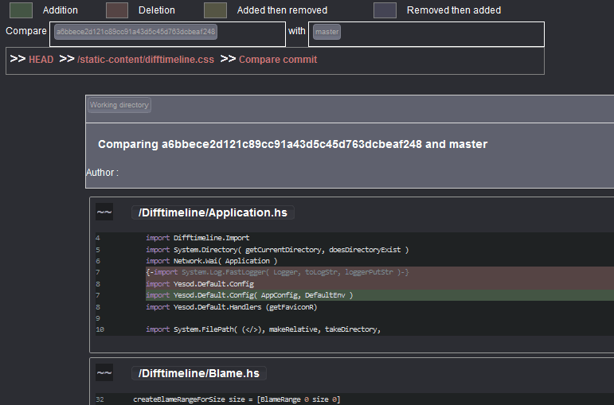

Difftimeline
Let's start easy, within a terminal in your project using git, type :
$ difftimelineYou can see the diff of the working directory from the HEAD. If you
click the huge button <, you can fetch previous commit from the
current head
If you click the button above < you can switch back and forth to the
"compact" view.
Navigating files
Clicking on the Tree panel will show you all the files contained
in the commit and let you browse them.

You can click on any to follow the history of a specific file, let's follow the static-content/difftimeline.css
You can see every modification of a file between two commits. In the commit description, each round represent a commit whom have not modified the file. If you click on any round, you will jump to the commit description. You can also use the compact mode
To directly see modifications for a file, you can use $ difftimeline filename at the command line.
Comparing Things together
Whenever you see something like :
And then, see the results, you can compare commit together, commit with branches, branches with commit and any file with any other file. The panel you can see on the right of the previous screenshot is the Branch Panel, it list the branch present in the git repository.

Blame
If you click on a blame button, present in file view or tree view, you can see the blame on a file starting on the current commit.
You can then click on any blame information to jump to the commit view.
Keyboard shortcuts
Right now the current keyboard shortcuts are implemented in Difftimeline :
h: Move to previous elementj: Move to element below (in commit view)k: Move to element above (in commit view)l: Move to next element0: Move to the first elementShift+4: Move to the last elementCtrl+Left: Move to the previous breadcrumb elementCtrl+Right: Move to the next breadcrumb element
Bugs
Found bugs? please fill a ticket in Difftimeline-bugtrack